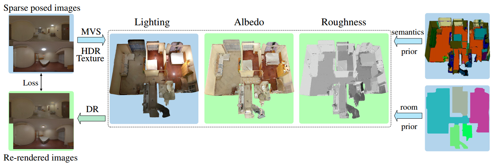
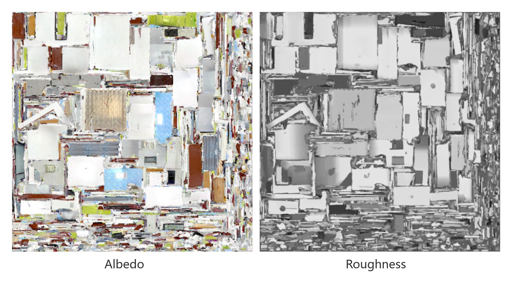

TexIR:
Multi-view Inverse Rendering for Large-scale Real-world Indoor Scenes
CVPR 2023
-
Zhen Li
"Realsee" -
Lingli Wang
"Realsee" -
Mofang Cheng
"Realsee" -
Cihui Pan*
"Realsee" -
Jiaqi Yang*
"Northwestern Polytechnical University"


Figure 1. Given a set of posed sparse-view images for a large-scale scene, we reconstruct global illumination and SVBRDFs. The recovered properties are able to produce convincing results for several mixed-reality applications such as material editing, editable novel view synthesis and relighting. Note that we change roughness of all walls, and albedo of all floors. The detailed specular reflectance shows that our method successfully decomposes physically-reasonable SVBRDFs and lighting. Please refer to supplementary videos for more animations.
Abstract
We present a multi-view inverse rendering method for large-scale real-world indoor scenes that reconstructs global illumination and physically-reasonable SVBRDFs. Unlike previous representations, where the global illumination of large scenes is simplified as multiple environment maps, we propose a compact representation called Texture-based Lighting (TBL). It consists of 3D meshs and HDR textures, and efficiently models direct and infinite-bounce indirect lighting of the entire large scene. Based on TBL, we further propose a hybrid lighting representation with precomputed irradiance, which significantly improves the efficiency and alleviate the rendering noise in the material optimization. To physically disentangle the ambiguity between materials, we propose a three-stage material optimization strategy based on the priors of semantic segmentation and room segmentation. Extensive experiments show that the proposed method outperforms the state-of-the-arts quantitatively and qualitatively, and enables physically-reasonable mixed-reality applications such as material editing, editable novel view synthesis and relighting.
Video
Overview

Figure 2. Overview of our inverse rendering pipeline. Given sparse calibrated HDR images for a large-scale scene, we reconstruct the geometry and HDR textures as our lighting representation. PBR material textures of the scene, including albedo and roughness, are optimized by differentiable rendering (DR). The ambiguity between materials is disentangled by the semantics prior and the room segmentation prior. Gradient flows in Green Background.
Roughness Comparison on Synthetic Dataset
Novel View Comparison on Synthetic Dataset
Material Editing
Editable Novel View Synthesis
Relighting
Texture Assets
